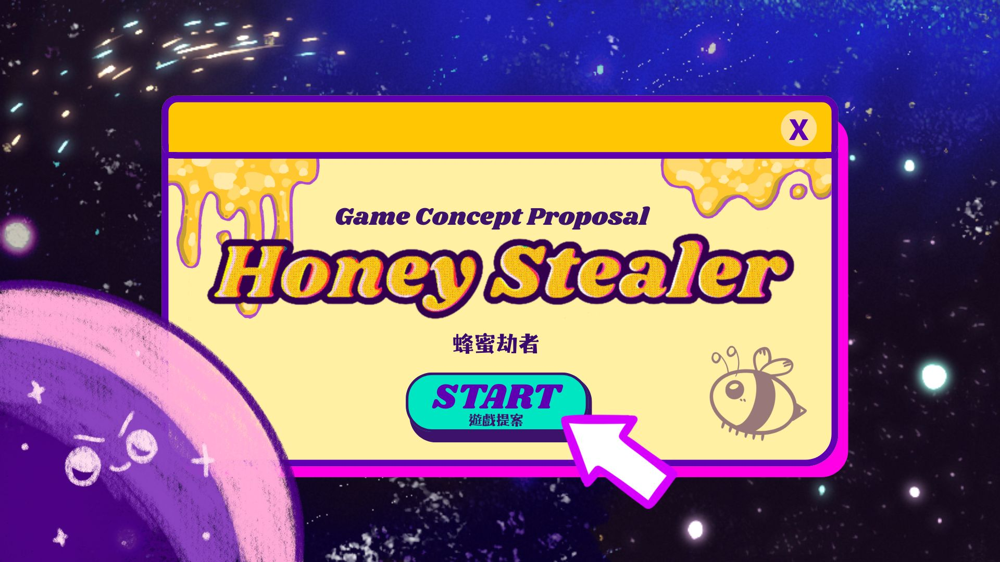
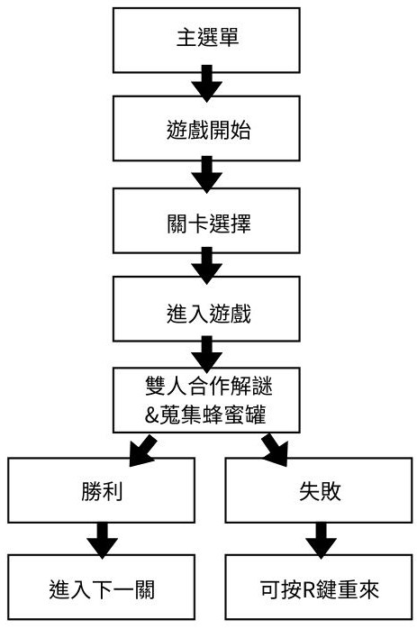
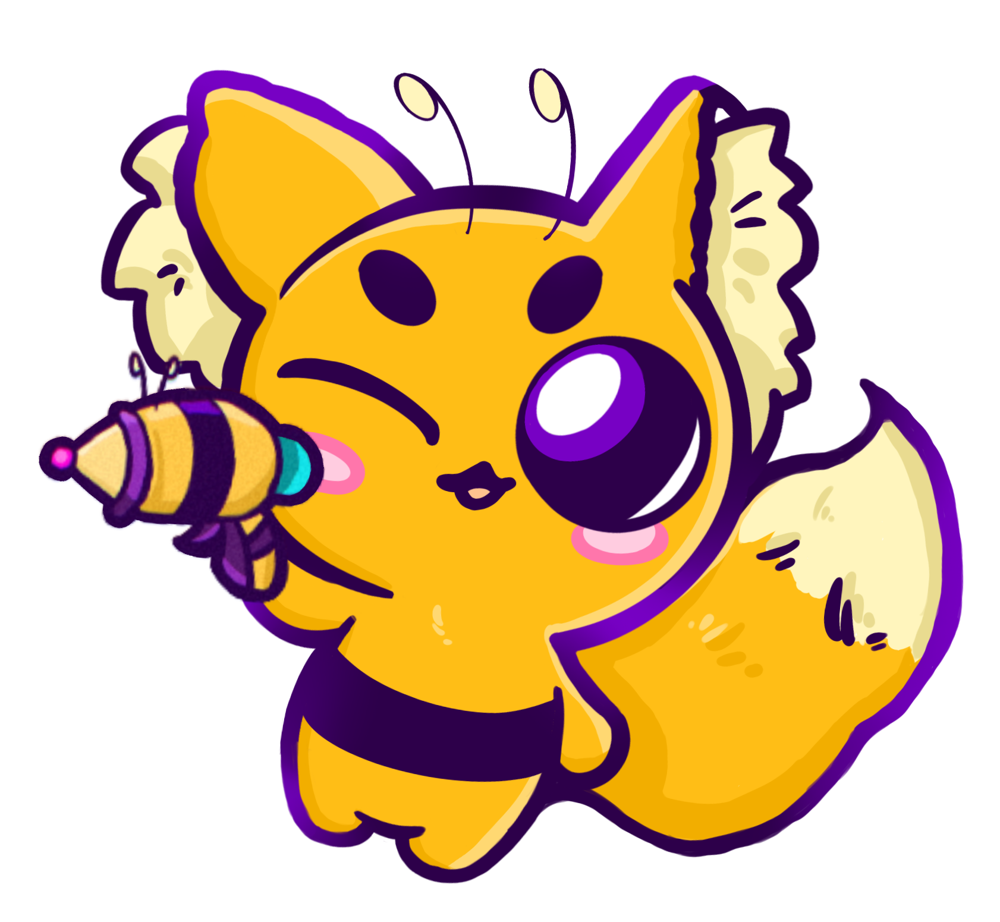
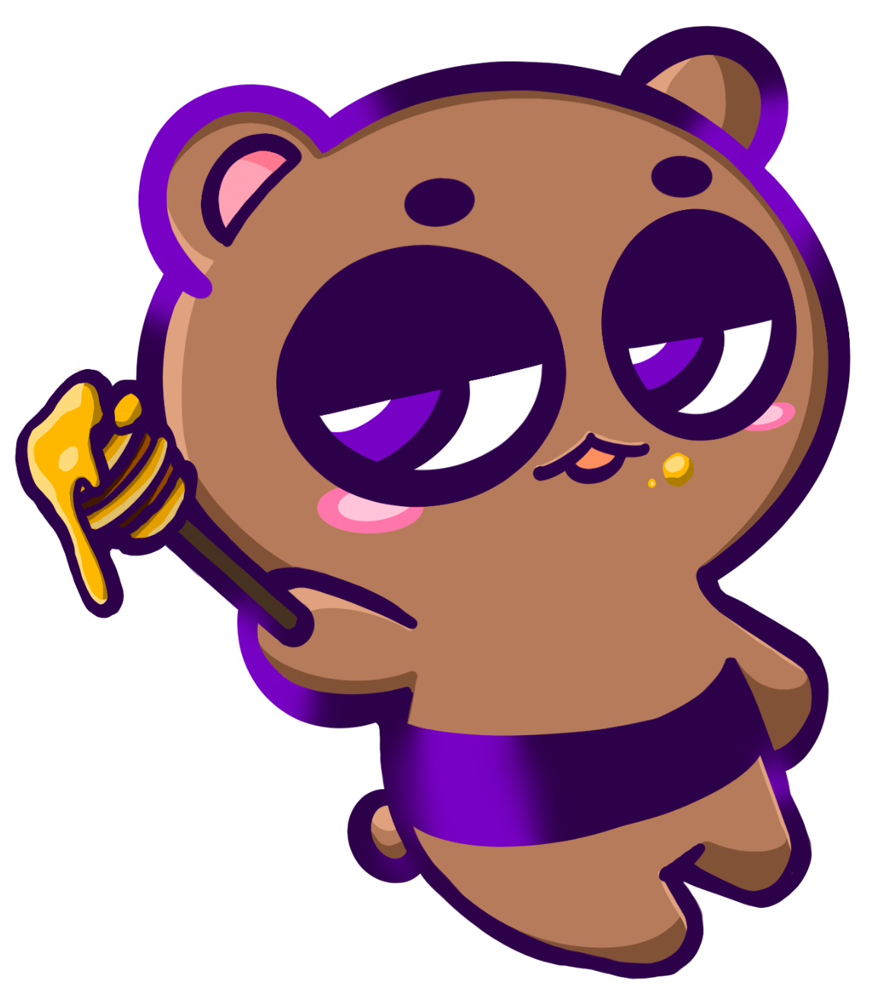
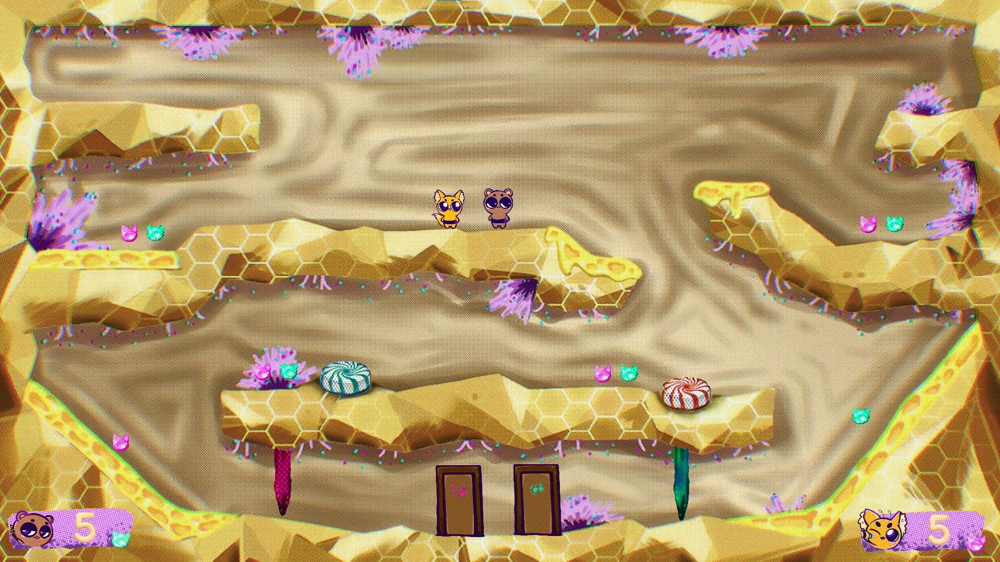

提案監製：林暐倫
美術設計 : 林暐倫、劉可婕
動畫設計：許紫晶
音樂設計：張庭綸
程式設計：程恩俞

壹、封面(標準字)
貳、發想
一、製作動機
在市面上，多數解謎平台遊戲都圍繞在抽象的機關或傳統元素（火、水、機械等），較少將**「甜食、生態、宇宙」結合成完整世界觀。
本遊戲希望以「蜂蜜宇宙」作為核心，打造一個既可愛又具有邏輯深度的雙角色合作解謎遊戲**。
製作這款遊戲的動機包含以下幾點：
1. 延續《冰火姐弟》的合作精神 透過兩位能力互補的角色，讓玩家在解謎過程中學會思考「合作」與「分工」，而不是單一角色通關。
2. 將蜂蜜與生態概念轉化為遊戲機制 蜂蜜不只是可愛的視覺元素，而是能延伸出「黏性、流動」等多樣玩法，讓世界觀與玩法緊密結合。
3. 打造具有原創風格的宇宙甜點世界 以蜂巢星球、花粉叢等作為場景靈感，建立一個具有高度識別度、適合視覺設計與關卡設計發揮的遊戲世界。
4. 結合可愛外表與需要動腦的核心體驗 表面上是溫柔、甜美的風格，但實際遊玩時需要玩家觀察環境、理解規則、嘗試錯誤，讓遊戲同時吸引輕度與中度玩家。
二、遊戲目的
玩家在遊戲中將操控兩名來自「蜂蜜宇宙」的角色，穿梭於不同的蜂蜜星域，透過合作解謎，修復逐漸失衡的甜蜜能量系統。
核心遊戲目的：
• 合作解謎通關關卡 玩家必須同時運用兩名角色的能力，啟動機關、避開危險、改變環境狀態，才能抵達關卡終點。
• 回收與穩定蜂蜜能量 每個關卡代表一個能量失衡的區域，玩家需要收集或引導蜂蜜能量，使星域恢復原本的秩序。
• 探索蜂蜜宇宙的不同區域 隨著遊戲進行，玩家將前往不同風格的星球，例如：流動性極高的液態蜂蜜區、結晶化的糖巢遺跡、被污染或變質的苦蜜地帶
• 體驗「互相依賴」的成長感 關卡設計會讓玩家清楚感受到： 任何一個角色單獨行動都無法完成任務 只有理解彼此的能力限制，才能前進。
三、為什麼玩家會想玩這款遊戲
玩家會想要遊玩這款遊戲，是因為它以少見的「蜂蜜宇宙」作為主題，結合雙角色合作解謎玩法，帶來新鮮又直覺的遊戲體驗。溫暖可愛的視覺風格與甜蜜、生態、宇宙等元素，讓人第一眼就產生好奇與好感。遊戲延續類似《冰火姐弟》的合作核心，但透過蜂蜜的黏性、流動與變化設計出多樣化的關卡機制，使玩家不需花太多時間學習規則，卻仍能感受到解謎的深度與挑戰。關卡設計強調角色之間的互相依賴，讓玩家在不斷嘗試與配合中獲得成就感。同時，修復蜂蜜宇宙能量失衡的目標，也賦予玩家情感動機，使遊戲不只是通關，而是一段溫柔又有意義的冒險旅程。
參、遊戲類型
˙ 雙角色合作解謎平台遊戲
˙ 遊戲以雙人為主
˙ 以電腦pc為主要遊玩器材
˙ 風格以可愛、蜂蜜宇宙為主
肆、故事大綱
在名為sugar space的甜點太空宇宙當中…有個名為「蜂蜜星球」的星球地域，蜂蜜星球當中無時無刻湧動著「蜂蜜之泉」，蜂蜜對他們來說相當重要的糧食以及能源來源。
但是突然有一天蜂蜜之泉不再湧動了，於是主角哈妮和班尼自告奮勇出發探險，決定於蜂蜜星球各地冒險蒐集蜂蜜能源，決心再次啟動蜂蜜之泉的湧動……。
伍、遊戲流程
ㄧ、操作方式
· 以WAD鍵為主
· 左右移動為AD鍵、W向上跳躍
· 碰觸蜂蜜罐即可累積蜂蜜數值
· R為重來
· esc為回主選單
· tab為設定
二、玩法介紹
本遊戲為一款雙角色合作解謎平台遊戲，玩家需同時操控兩名能力互補的角色，在蜂蜜宇宙的各個關卡中前進。
遊戲以平台跳躍為基礎，結合環境互動與解謎要素，玩家必須觀察關卡中的蜂蜜機制，如黏性、流動與結晶狀態，並善用角色能力改變環境條件，才能突破障礙。每個關卡中分布著多個「蜂蜜罐」作為蒐集目標，玩家需要透過精準操作與角色配合，取得位於高處或危險區域的蜂蜜罐。
蒐集蜂蜜罐不僅影響關卡完成度，也與世界解鎖、獎勵內容相關，鼓勵玩家反覆挑戰與完美通關。透過解謎、合作與蒐集的結合，玩家在前進的同時，逐步修復失衡的蜂蜜宇宙。
三、流程圖

四、市場分析
S（Strengths｜優勢）
W（Weaknesses｜劣勢）
O（Opportunities｜機會）
T（Threats｜威脅）
陸、 遊戲風格與主角設計
一、概念設計


二、遊戲畫面
